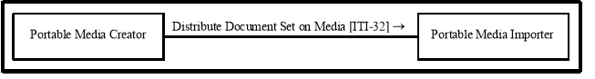
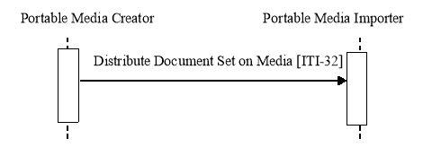

IHE IT Infrastructure (ITI)
Technical Framework
Revision 16.0 – Final Text
Physician to patient to physician - Bob has an MRI and cancer is diagnosed. He is given a CD-R with his MRI results and referral information on it to give to the specialist of his choice.
Patient visiting ED - In addition, Bob, the informed patient, maintains a copy of his EHR record at home and can bring the CD-R with him when he visits the ED for an unrelated emergency.
Physician to physician - Dr. Primary refers his aging patient Mr. Robinson to his first appointment with a gastroenterology specialist. He transfers relevant documents in a zip file attached to an email to the specialist.
The common thread of these use cases is that they are person-to-person communications. The XDM solution is intended to be easy to implement with pre-existing email clients, CD burners and USB ports. XDM does not include any additional reliability enhancements. XDM requires that the recipient be able to support human intervention in order to manually control the importing of the data (patient ID reconciliation, selection of patient of interest from possibly multiple patients’ documents on the media).
XDM is document format agnostic, supporting the same document content as XDS and XDR. Document content is described in Document Content Profiles. Examples are XDS-MS, XPHR, XDS-SD, and XD-LAB.
XDM defines no new metadata. It leverages XDS metadata with emphasis on patient identification, document identification, description, and relationships.
A directory and file structure is documented for populating the media. This structure maintains separate areas for each patient listed and is supported on all referenced media types. Media and the structure were selected based on experience with media interoperability in Radiology, i.e., PDI Profile. The media selected are the widespread CD-R, USB removable media, and email with ZIP attachment.

Figure 16.1-1: XDM Actor Diagram
Table 16.1-1 lists the transactions for each actor directly involved in the XDM Profile. In order to claim support of this Integration Profile with one or more actors, an implementation must perform the required transactions (labeled “R”). Transactions labeled “O” are optional. A complete list of options defined by this Integration Profile and that implementations may choose to support is listed in Section 16.2.
Table 16.1-1: XDM Integration Profile - Actors and Transactions
|
Actors |
Transactions |
Optionality |
Section |
|
Portable Media Creator |
Distribute Document Set on Media [ITI-32] |
R |
|
|
Portable Media Importer |
Distribute Document Set on Media [ITI-32] |
R |
Options that may be selected for this Integration Profile are listed in Table 16.2-1 along with the Actors to which they apply. Dependencies between options when applicable are specified in notes.
Table 16.2-1: XDM - Actors and Options
|
Actor |
Options |
Vol. & Section |
|
Portable Media Creator |
USB (Note 1) |
|
|
CD-R (Note 1) |
||
|
ZIP over Email (Note 1) |
||
|
Basic Patient Privacy Enforcement |
||
|
Zip over Email Response (Note 2) |
||
|
Portable Media Importer |
USB (Note 1) |
|
|
CD-R (Note 1) |
||
|
ZIP over Email (Note 1) |
||
|
Basic Patient Privacy Enforcement |
||
|
Zip over Email Response (Note 2) |
Note 1: At least one of these options is required for each Actor. In order to enable a better interoperability, is highly recommended that the actors support all the options.
Note 2: This option requires the ZIP over Email Option.
In this option the Portable Media Creator writes a set of documents on USB media. The media is physically transported to the Portable Media Importer which then imports the document set.
In this option the Portable Media Creator writes a set of documents on CD-R media. The media is physically transported to the Portable Media Importer which then imports the document set.
In this option the Portable Media Creator creates an ordinary ZIP file of the virtual media containing document set(s). The ZIP file is attached to an Email sent to the Portable Media Importer which then retrieves the Email and imports the ZIP file containing the document set.
In this option the Portable Media Importer sends a response (MDN Based) to the Portable Media Creator to acknowledge that the Import operation of the Document Set(s) received was successful.
If this option is supported, the ZIP over Email Option shall be supported.
XDM describes the exchange of a set of a patient’s documents between healthcare providers, such as: physicians, hospitals, special care networks, or other healthcare professionals.
Where XDS is not desirable or available for one of the participants in the exchange of information, XDM is a viable option.
XDM should be used in a situation where the information receiver is an individual who will manually interpret or examine the data and associated documents as though they were using physical media. XDM also allows for the exchange of documents relating to multiple patients, since the data will be interpreted manually by human intervention.
The XDM Integration Profile is intended only for exchange of personal medical documents and not intended to address all cross-enterprise EHR communication needs. Some use cases may require the use of other IHE integration profiles such as XDS, DSG, PIX, and ATNA. Other use cases may only be partially supported, while still others may require future IHE integration profiles.
Use Cases:
In a case where either Dr. Primary’s office or Dr. Gastro’s clinic was not able to handle secure email, or other sustained online point-to-point communications (e.g., http over VPN), the XDM Profile would provide further solutions for the simpler environment, such as the use of physical media, or email where the interchanged document set will be manually interpreted by a human intervention.
In a hospital, or in the case of a family physician not using robust EHR, the patient could be handed a CD or USB media with their discharge information on it to bring with them to their follow-up visit with their family physician.
If the hospital does not have an EHR application that automatically interprets her medical data and shares it with the necessary members of her health team, the information can be transferred manually directly to the file clerk, intake coordinator, records manager, or primary physician depending on the organization’s resource model.
This profile is only defining the digital transport mechanism used for such use cases. Content transported will be detailed by Content Profiles such as the ones defined by the IHE PCC (Patient Care Coordination) domain.

Figure 16.3-1: Process Flow in XDM Profile
The media can be either CD-R or a USB media device, because these are the most common media types in other industries for the portable transport of electronic information. This supplement requires using one of these media types, depending on the use case. The benefit and risks of the reusability of the media deployed should be taken into account, especially when the media is under the control of the patient.
Note: 1. Because the size of documents to be exchanged rarely requires more than the capacity of a CD, and the format for storing data on various different recordable DVD media is not totally stable yet, this profile is following the restriction defined in the IHE RAD PDI Profile, to not use recordable DVD media at this time.
2. CD-RW is excluded from this profile because field experiences with CD-RW in radiology with this media showed significant interoperability problems and significant accidental damage levels.
3. The CD-R media is limited to the 74 minute blanks because the long playing CD-R format gains the larger capacity by eliminating one level of error correction and detection. The resulting much higher undetected error rate is considered unacceptable for medical data.
The media can be a ZIP file containing the document set and sent via a secure email message.
The requirements for media content are intended to promote the simple transfer of medical documents, including patient summaries, lab results, discharge letters and reports, and to allow for the viewing of such documents on general purpose computers by care providers or patients.
Created media are required to contain documents and the relevant associated metadata.
The media contains one or more Submission Sets including the documents and the associated metadata, organized in a well-defined directory structure starting at the root level.
The media content can be made web viewable by a web browser by providing optional files containing HTML content. This content must be based on the original documents in order to ensure consistency. Any ordinary web browser can be used to read these files. The Portable Media Importer ignores these files. They are just intended for the human recipient.
Additional content may be present (files, directories), but can be ignored by the Portable Media Importer.
To summarize, the Portable Media Importer has two complementary ways to access the media and its content through a basic web browser:
Access to the content of an individual document is outside the scope of this Integration Profile and shall be addressed in specific IHE document content Integration Profiles.
The Profile assumes that the Healthcare delivery organizations that are using Portable Media Creator and Importer have an agreement defining when they can interchange PHI. This may require an explicit patient consent (depending on existing regulations) and an agreement on how to manage the potential inconsistency between the security policies. The main aspects that should be covered by this agreement are similar to XDS – See ITI TF-1: Appendix L. In addition, the following aspects should be covered:
In the case of physical media, security responsibilities for confidentiality and integrity are transferred to the patient by providing the media to the patient. In this case it is the patient’s responsibility to protect the media, and the patient has the authority to disclose the contents of the media as they choose. They disclose the contents by providing the media.
The Portable Media Creator in most cases does not know who the ultimate Importer will be, thus rendering encryption impractical.
In the case of transfer over email using a ZIP attachment, the transaction is secured by the use of S/MIME.
Both Actors for this Profile require a grouping with an ATNA Secure Node or Secure Application.
A Portable Media Creator in XDM might be grouped with a Portable Media Creator in the RAD PDI Profile to enable it to include DICOM instances on the same media. A grouped PDI / XDM Media Creator application will handle the data for the media as defined for each actor by its profile. This grouping is described in RAD TF-3: 4.47.4.1.2.2.3.
A Portable Media Importer in XDM might be grouped with a Portable Media Importer in the PDI Profile to process the combined PDI / XDM media, for example, for the use in an XDS-I infrastructure. A grouped PDI / XDM Media Importer application will handle the media data as defined for each actor by its profile. This grouping is described in RAD TF-3: 4.47.4.1.3.4.